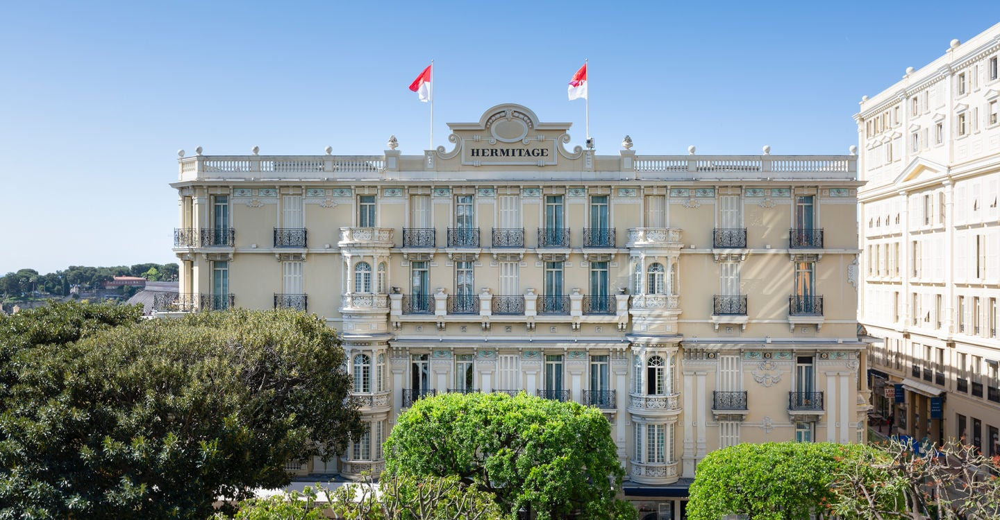
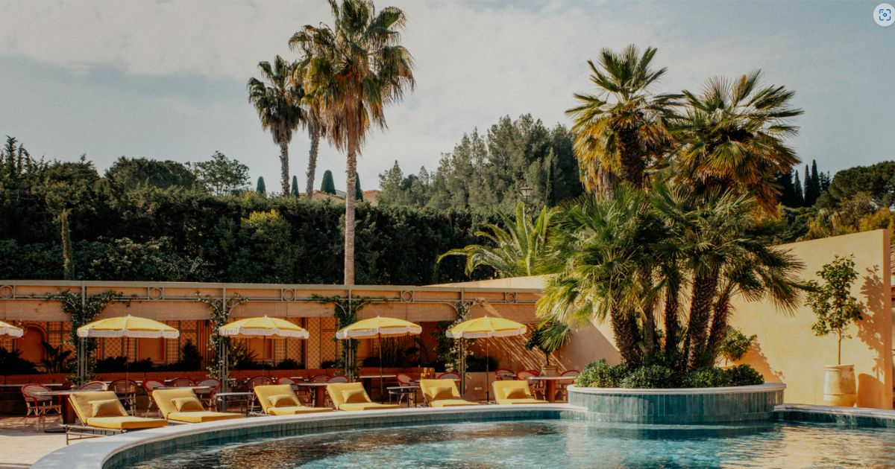

Hôtels de charme sur la Côte d'Azur : 12 adresses testées
La Côte d'Azur compte des centaines d'hôtels qui revendiquent le charme. Douze méritent
vraiment qu'on s'y arrête, avec, pour chacun, son score, son bémol, et l'Indice Saisonnalité
qui révèle le bon mois pour réserver.
Par Swann Bertaud, rédacteur✺Publié le 21 juillet 2026✺18 min de lecture
Le Cap Estel et sa péninsule privée de 2 hectares, à Eze-Bord-de-Mer.
Photo : site officiel.
TL;DR : l'essentielLe podium azuréen 2026
Cap Estel (Eze-Bord-de-Mer), 9,3/10 : 20 chambres sur
une péninsule privée de 2 hectares, les pieds dans la Méditerranée, à 15 min de Monaco.
Château de la Chèvre d'Or (Eze village), 9,1/10 :
le charme médiéval à 400 m d'altitude, 2 étoiles Michelin.
Grand-Hôtel du Cap-Ferrat, 9,0/10 : le palace
Belle Époque de 1908, piscine creusée dans le roc face à la mer.
La surprise : La Jabotte à Antibes (7,0/10),
six chambres à 60 m de la plage dès 124 €/nuit, et le deuxième Indice Saisonnalité le plus stable du palmarès (0,49).
L'Indice Saisonnalité LMHS (prix basse saison ÷ prix haute saison) va de
0,20 pour l'Hôtel Juana, 80 % d'économie hors saison, à 0,50
pour les Belles Rives, dont les tarifs bougent le moins sur l'année.
La grille LMHS Destination : comment nous avons noté
Ce palmarès applique la grille LMHS Destination, la déclinaison du Protocole LMHS réservée à nos classements par ville ou par région. Elle note sur 10 et pondère cinq critères : rapport qualité-prix (25 %), un critère thématique qui s'adapte à l'objet du classement (25 %, ici le charme architectural et l'ambiance, contre le spa & bien-être dans notre palmarès des hôtels de luxe à Saint-Tropez), la localisation (20 %), le service (20 %) et les avis clients vérifiés (10 %).
Elle se distingue du Protocole LMHS classique, noté sur 20 sur quatre piliers égaux (Luxe, Mise en scène, Hospitalité, Soin), qui sert à notre palmarès national des 50 meilleurs hôtels & spas de France. Les deux notes ne sont pas interchangeables. Deux adresses de ce palmarès figurent d'ailleurs aussi au classement national, où elles sont évaluées sur 20 : le Grand-Hôtel du Cap-Ferrat (15,8/20, 17e place nationale) et l'Hôtel Belles Rives (14,9/20, 26e place).
Nous y ajoutons ici une donnée propriétaire inédite : l'Indice Saisonnalité LMHS, soit le rapport entre le prix de la basse saison et celui de la haute saison. Plus l'indice est bas, plus l'écart est brutal, et plus la basse saison devient intéressante.
Le tableau : scores, prix et Indice Saisonnalité
Rang
Hôtel
Score LMHS
Basse saison
Haute saison
Indice Saisonnalité
Meilleure fenêtre
01
Cap Estel
9,3/10
700 €
1 875 €
0,37
Avr-mai
02
Chèvre d'Or
9,1/10
982 €
2 610 €
0,38
Avr-mai
03
Grand-Hôtel Cap-Ferrat
9,0/10
950 €
3 200 €
0,30
Oct-nov
04
Hôtel Negresco
8,8/10
329 €
1 054 €
0,31
Jan-fév
05
Belles Rives
8,6/10
520 €
1 050 €
0,50
Mars-avr
06
Hermitage Monte-Carlo
8,5/10
350 €
1 200 €
0,29
Jan-fév, oct
07
Château Eza
8,3/10
300 €
900 €
0,33
Avr-mai, oct
08
Majestic Barrière Cannes
8,2/10
420 €
1 400 €
0,30
Oct-nov
09
La Pérouse Nice
8,0/10
212 €
620 €
0,34
Nov-mars
10
Le Mas Candille
7,8/10
235 €
700 €
0,34
Fév-mars
11
Hôtel Juana
7,4/10
160 €
790 €
0,20
Avr-mai
12
La Jabotte
7,0/10
124 €
254 €
0,49
Toute l'année
Prix indicatifs chambre standard par nuit, taxes non incluses.
Indice Saisonnalité = prix basse saison ÷ prix haute saison, plus il est bas, plus l'écart est fort.
Sources : sites officiels, Booking.com, TripAdvisor, relevés en juillet 2026.
Notre sélection : les 12 meilleurs hôtels de charme
01
Cap Estel, Eze-Bord-de-Mer 9,3/10
Pour qui : ceux qui veulent l'isolement absolu, les pieds dans la Méditerranée, sans renoncer à la gastronomie étoilée ni au spa.
Vingt chambres et suites réparties dans un domaine privé de 2 hectares. Le Cap Estel avance dans la mer comme une proue de navire : la vue à 270° sur la Méditerranée, Saint-Jean-Cap-Ferrat et les Alpes est proprement étourdissante. L'architecture oscille entre manoir Belle Époque et villa méditerranéenne, fontaines, cascades, parc luxuriant. Le spa by Sothys dispose de deux piscines vue mer, d'un court de tennis et de soins ritualisés. La Table du Cap Estel (1 étoile Michelin, chef Kévin Garcia) propose une cuisine méditerranéenne précise. TripAdvisor : 4,7/5 sur 146 avis.
Le bémol LMHS : la fermeture hivernale (de novembre à mi-avril) réduit drastiquement les fenêtres de réservation. L'accessibilité est difficile pour les personnes à mobilité réduite sur certaines parties du domaine. Et à 1 875 €/nuit en haute saison pour une chambre standard, l'Indice Saisonnalité de 0,37 reste tendu.
Eze-Bord-de-Mer · Dès 700 €/nuit en basse saison · Dès 1 875 € en haute saison ·
Site officiel →
02
Château de la Chèvre d'Or, Eze village 9,1/10
Pour qui : amateurs de charme médiéval, de gastronomie 2 étoiles Michelin et de vues panoramiques depuis 400 mètres d'altitude.
Depuis 1953, la Chèvre d'Or s'est forgée dans les remparts médiévaux d'Eze une réputation qui dépasse largement la région. Les chambres et suites se répartissent entre le bâtiment principal du Château et plusieurs maisons intégrées au village piétonnier : cheminées, escaliers en pierre, vues panoramiques depuis chaque recoin. En 2024, le chef et Meilleur Ouvrier de France Tom Meyer a pris la tête des cuisines du restaurant gastronomique 2 étoiles Michelin. Quatre espaces de restauration, piscines avec service, spa sur mesure. Membre Relais & Châteaux. TripAdvisor : 4,6/5 sur 1 126 avis.
Le bémol LMHS : la maison est saisonnière, ouverte chaque année d'avril à fin octobre. Un séjour à Èze en hiver suppose une autre adresse.
Pour qui : ceux qui veulent le palace le plus exclusif de la Riviera française, avec plage privée, spa Four Seasons et jardin botanique à deux pas.
Sur la presqu'île de Saint-Jean-Cap-Ferrat, entre Nice et Monaco, le Grand-Hôtel du Cap-Ferrat (Four Seasons) est l'adresse la plus mythique de la Côte d'Azur. 73 chambres et suites dans un palace Belle Époque de 1908, entouré d'un parc de 7 hectares. La piscine creusée dans le roc, face à la mer, est une des plus belles de France. Spa Four Seasons, restaurant gastronomique Le Cap, plage privée Club Dauphin avec funiculaire. Ouvert à l'année. Avec un Indice Saisonnalité de 0,30, réserver en octobre ou novembre permet d'économiser 70 % sur le tarif estival.
Le bémol LMHS : les prix en haute saison (à partir de 3 200 €/nuit) placent cet hôtel hors de portée de la majorité des voyageurs. La presqu'île est enclavée, sans voiture, les déplacements sont compliqués. Le restaurant Le Cap est excellent mais les prix à la carte sont parmi les plus élevés de la région.
Saint-Jean-Cap-Ferrat · Dès 950 €/nuit en basse saison · Dès 3 200 € en haute saison ·
Site officiel →
04
Hôtel Negresco, Nice 8,8/10
Pour qui : amateurs d'histoire, d'art et de palace Belle Époque sur la Promenade des Anglais, avec le meilleur rapport qualité-prix de la catégorie palace.
Le Negresco est une institution. Depuis 1913, sa coupole rose domine la Promenade des Anglais. 121 chambres et suites décorées comme un musée, chaque pièce abrite des œuvres d'art françaises du XVIIe au XXe siècle, des tapisseries des Gobelins, des lustres en cristal Baccarat. Le salon Louis XIV, le salon Empire, la salle à manger Chantecler : chaque espace a une identité propre. TripAdvisor : 4,4/5 sur 4 553 avis. En janvier-février, la chambre classique descend à 329 €/nuit.
Le bémol LMHS : le rapport qualité-prix est critiqué par une partie des clients, qui jugent que l'entretien de certaines chambres ne justifie pas les tarifs estivaux. Le spa n'est pas à la hauteur des meilleurs établissements du palmarès. Et la Promenade des Anglais reste une artère très fréquentée, loin de l'intimité d'un Cap Estel.
Nice · Dès 329 €/nuit en basse saison · Dès 1 054 € en haute saison ·
Site officiel →
05
Hôtel Belles Rives, Juan-les-Pins 8,6/10
Pour qui : couples en quête d'un hôtel bord de mer avec une histoire littéraire (Fitzgerald y a écrit Gatsby), une plage privée et un restaurant 1 étoile Michelin.
Depuis 1929, la famille Estène-Chauvin perpétue l'art de vivre Art déco des Belles Rives. 43 chambres et suites dans un bâtiment des années 1930 réhabilité par l'architecte Olivier Antoine, marbres et granito, fer forgé, fresques cubistes. La terrasse panoramique sur la Méditerranée, l'Estérel et les îles de Lérins est parmi les plus belles de la Riviera. Plage privée avec ski nautique historique, restaurant La Passagère (1 étoile Michelin), Piano Bar Fitzgerald. Membre Small Luxury Hotels of the World. Ouvert du 8 mars au 26 octobre 2026.
Le bémol LMHS : les chambres sont petites pour un 5 étoiles, les salles de bain sont franchement minuscules dans les catégories d'entrée de gamme. Le service sur la plage est inconstant. Le petit-déjeuner buffet à 45 €/personne est correct sans être exceptionnel pour ce standing.
Juan-les-Pins · Dès 520 €/nuit en basse saison · Dès 1 050 € en haute saison ·
Site officiel →
06

Hôtel Hermitage Monte-Carlo 8,5/10
Pour qui : ceux qui veulent l'élégance Belle Époque de Monaco, un restaurant étoilé Yannick Alléno et l'accès aux Thermes Marins (6 600 m²).
Au cœur de Monaco, l'Hermitage cultive depuis plus d'un siècle une élégance discrète. Jardin d'hiver baigné par la coupole Eiffel, suites avec terrasse et jacuzzi, vue sur le port de la Principauté. Le restaurant Pavyllon Monte-Carlo (Yannick Alléno) propose une cuisine méditerranéenne raffinée dans un cadre chic et intime. L'accès aux Thermes Marins Monte-Carlo (piscine, thalasso, spa) est l'un des atouts majeurs de l'établissement. Ouvert à l'année.
Le bémol LMHS : certaines chambres accusent leur âge. Le parking est coûteux et la vue sur mer est parfois bloquée par les toits voisins dans les catégories inférieures. Pendant le Grand Prix de Monaco (mai), les prix explosent et les délais de service se dégradent.
Monaco · Dès 350 €/nuit en basse saison · Dès 1 200 € en haute saison ·
Site officiel →
07
Château Eza, Eze village 8,3/10
Pour qui : couples romantiques qui veulent dormir dans un château médiéval du XIVe siècle, avec terrasse privée et jacuzzi à 400 mètres au-dessus de la Méditerranée.
Le Château Eza a une histoire singulière : le prince Wilhelm de Suède en tombe amoureux en 1920 et rachète les maisons du village une à une pour en faire sa résidence d'hiver. Depuis 1987, c'est un hôtel. Dix chambres et suites aux caractères tous différents, terrasses privées avec bains à remous, vues spectaculaires sur la côte entre Nice et Monaco. Restaurant gastronomique de 50 places. TripAdvisor : 4,5/5 sur 957 avis.
Le bémol LMHS : la description des chambres sur le site peut être trompeuse, vérifiez la taille exacte avant de réserver. Le service présente des inconstances signalées par plusieurs clients récents. Le village d'Eze est entièrement piétonnier : monter les bagages sur les ruelles pavées est une réalité à anticiper.
Eze village · Dès 300 €/nuit en basse saison · Dès 900 € en haute saison ·
Site officiel →
08
Hôtel Barrière Le Majestic, Cannes 8,2/10
Pour qui : ceux qui veulent un palace sur la Croisette, avec plage privée, spa et l'adresse la plus complète de Cannes pour le Festival ou hors saison.
Le Majestic Barrière est le palace le plus cohérent de la Croisette. Façade blanche classique, 349 chambres et suites, plage privée avec restaurant, spa Diane Barrière, piscine extérieure chauffée, restaurant Fouquet's Cannes. La vue mer depuis les chambres supérieures est directe sur la Méditerranée et les îles de Lérins. Pendant le Festival de Cannes (mai), l'hôtel est le QG des délégations officielles, ambiance unique mais prix stratosphériques.
Le bémol LMHS : en dehors du Festival, l'hôtel peut paraître surdimensionné pour un séjour intime, 349 chambres, c'est une machine. Le spa n'atteint pas le niveau des établissements mieux classés. Et la Croisette en juillet-août est bondée.
Cannes · Dès 420 €/nuit en basse saison · Dès 1 400 € en haute saison ·
Site officiel →
09
La Pérouse, Nice 8,0/10
Pour qui : ceux qui veulent les meilleures vues sur la Baie des Anges depuis Nice, dans un boutique-hôtel intime à deux pas du Vieux-Nice, sans payer les tarifs d'un palace.
La Pérouse est la surprise de Nice. Accrochée à la colline du Château, au 11 quai Rauba-Capeù, ce 4 étoiles de 50 chambres offre des vues sur la Baie des Anges que les palaces de la Promenade ne peuvent pas égaler. Piscine chauffée, jardin méditerranéen, restaurant avec terrasse panoramique. L'ambiance est intime et chaleureuse, un hidden gem, comme le décrivent les clients anglophones.
Le bémol LMHS : les chambres sont petites et le mobilier accuse parfois son âge. L'accès est étroit, la position encastrée dans la roche complique l'arrivée avec des bagages lourds. Pas de spa à proprement parler : juste une piscine et un jardin. Pour un séjour wellness, regardez ailleurs.
Nice · Dès 212 €/nuit en basse saison · Dès 620 € en haute saison ·
Site officiel →
10

Le Mas Candille, Mougins 7,8/10
Pour qui : amateurs de spa Clarins, de vue sur l'arrière-pays grassois et de calme provençal à 20 minutes de Cannes et de Nice.
Perché sur la colline de Mougins, le Mas Candille est l'hôtel iconique de l'arrière-pays azuréen. 46 chambres et suites réparties dans trois bâtiments (le Mas, la Bastide, la Villa), repensés par l'architecte Hugo Toro. Parc de 4 hectares, deux piscines dont une intérieure-extérieure de 25 mètres chauffée à l'année, The Glow House Spa by Clarins (hammam, sauna, bain froid), restaurant Le Candela.
Le bémol LMHS : le restaurant Le Pool (côté piscine) reçoit des avis très mitigés, portions insuffisantes, service approximatif selon plusieurs clients récents. Certaines chambres sont signalées comme petites pour le tarif. L'inconstance du service est le point faible récurrent. Et l'on n'est pas au bord de la mer.
Mougins · Dès 235 €/nuit en basse saison · Dès 700 € en haute saison ·
Site officiel →
11
Hôtel Juana, Juan-les-Pins 7,4/10
Pour qui : amateurs d'architecture Art déco des années 1930, de Juan-les-Pins et de l'accès aux prestations du groupe Belles Rives.
L'Hôtel Juana est le complément naturel des Belles Rives dans le groupe éponyme. 40 chambres et suites dans un bâtiment Art déco au cœur de Juan-les-Pins, à quelques mètres de la plage. Piscine en marbre blanc, restaurant Paseo, sauna, salle de sport. Les clients bénéficient d'un accès privilégié à toutes les prestations de l'Hôtel Belles Rives : plage privée, ski nautique, Beauty Corner by Valmont. Ouvert du 13 avril au 23 octobre 2026. Son Indice Saisonnalité de 0,20 est le plus bas du palmarès : réserver en avril permet d'économiser 80 % sur le tarif estival.
Le bémol LMHS : le classement 5 étoiles est contesté par une partie des clients, qui jugent les prestations en deçà du standing affiché. Les coûts s'accumulent vite : parking 30 €/jour, petit-déjeuner 42 €/personne, espresso 6 €. Certaines installations montrent des signes d'usure.
Juan-les-Pins · Dès 160 €/nuit en basse saison · Dès 790 € en haute saison ·
Site officiel →
12
La Jabotte, Antibes 7,0/10
Pour qui : ceux qui cherchent un hôtel de charme bord de mer à prix humain, dans une ambiance provençale authentique, à 60 mètres de la plage de la Salis.
La Jabotte est la vraie surprise de ce palmarès. Six chambres seulement, au Cap d'Antibes, à 60 mètres de la mer. Jardin secret, piscine extérieure chauffée, chambres personnalisées avec goût, chaque pièce a son caractère propre. Petit-déjeuner avec jus de fruits frais pressés. Les propriétaires sont attentionnés, le cadre est calme et romantique, à 15 minutes à pied de la vieille ville d'Antibes. Son Indice Saisonnalité de 0,49 est le deuxième meilleur du palmarès, juste derrière les Belles Rives (0,50) : l'écart basse/haute saison y est parmi les plus faibles, ce qui en fait l'une des adresses les plus stables tarifairement. Ouvert toute l'année. TripAdvisor : 4,5/5 sur 404 avis.
Le bémol LMHS : six chambres seulement, la disponibilité est très restreinte, surtout en été. Pas de restaurant sur place. Une règle stricte interdit de consommer sa propre nourriture ou boisson sur le patio, ce qui a été mal perçu par certains clients. Et quelques avis isolés signalent un accueil variable selon les gérants présents.
Antibes · Dès 124 €/nuit en basse saison · Dès 254 € en haute saison ·
Site officiel →
La Côte d'Azur par zone : où séjourner selon votre style
La Côte d'Azur s'étend sur 120 kilomètres. Chaque zone a une identité propre. Voici comment choisir selon ce que vous cherchez vraiment.
Nice et ses alentours
Nice est la seule grande ville du littoral azuréen avec une vraie vie urbaine toute l'année. Pour un hôtel de luxe en ville, le Negresco (8,8/10) est l'adresse historique incontournable sur la Promenade des Anglais. La Pérouse (8,0/10) est le choix malin : moins connue, plus intime, avec les meilleures vues sur la Baie des Anges. Nice est aussi la porte d'entrée idéale pour explorer l'arrière-pays (Eze, Vence, Saint-Paul-de-Vence) sans voiture.
Entre Antibes et Juan-les-Pins
Ce secteur concentre trois adresses très différentes. Les Belles Rives (8,6/10) est le choix romantique et historique, directement sur la mer avec son Art déco et son étoile Michelin. L'Hôtel Juana (7,4/10) est son complément naturel, plus accessible, avec accès aux mêmes prestations de plage. La Jabotte (7,0/10) est la pépite confidentielle pour ceux qui veulent le charme provençal à deux pas de la mer sans se ruiner.
Eze et les villages perchés
Eze concentre à elle seule trois établissements du palmarès. Le Cap Estel (9,3/10) est en bord de mer, à Eze-Bord-de-Mer, dans une tout autre atmosphère que le village perché. La Chèvre d'Or (9,1/10) et le Château Eza (8,3/10) sont tous deux dans le village médiéval, à 400 mètres d'altitude. La différence : la Chèvre d'Or est plus grande (plusieurs bâtiments, plusieurs restaurants), le Château Eza est plus intime (10 chambres).
Cannes et la Croisette
Cannes, c'est le Majestic Barrière (8,2/10) pour le palace complet sur la Croisette, et le Mas Candille (7,8/10) à Mougins pour l'arrière-pays calme à 20 minutes. Évitez le Festival de Cannes (mi-mai) si vous n'y participez pas : les prix triplent et la ville est saturée. Plus à l'ouest, la presqu'île tropézienne fait l'objet de notre palmarès des meilleurs hôtels de luxe à Saint-Tropez.
FAQ : hôtels de charme sur la Côte d'Azur
Quel est le meilleur hôtel de charme sur la Côte d'Azur en 2026 ?
Selon la grille LMHS Destination, le Cap Estel à Eze-Bord-de-Mer obtient le score le plus élevé (9,3/10) grâce à sa péninsule privée de 2 hectares, son spa by Sothys avec deux piscines vue mer et son restaurant gastronomique 1 étoile Michelin. Pour un charme de village médiéval, la Chèvre d'Or (9,1/10) est la référence absolue avec ses 2 étoiles Michelin et ses vues à 400 mètres d'altitude. Pour le meilleur rapport charme/prix, La Pérouse à Nice (8,0/10) est la surprise du palmarès.
Quand réserver un hôtel de charme sur la Côte d'Azur pour payer moins cher ?
L'Indice Saisonnalité LMHS révèle que les meilleures fenêtres varient selon l'établissement. L'Hôtel Juana affiche l'indice le plus bas (0,20) : en avril, la chambre descend à 160 €/nuit contre 790 € en août, soit 80 % d'économie. Le Grand-Hôtel du Cap-Ferrat (indice 0,30) reste très avantageux hors saison : réserver en octobre-novembre permet d'économiser 70 % sur le tarif estival. À l'inverse, les Belles Rives est l'adresse la plus stable (indice 0,50), juste devant La Jabotte (0,49) : leurs prix varient peu sur l'année. Sur l'ensemble du palmarès, la hausse estivale va de +102 % (les Belles Rives) à +394 % (Hôtel Juana). Évitez le Festival de Cannes et le Grand Prix de Monaco, tous deux en mai : les prix explosent dans toute la région.
Quel hôtel bord de mer choisir sur la Côte d'Azur ?
Pour un hôtel bord de mer avec accès direct à la plage, les Belles Rives à Juan-les-Pins (plage privée Art déco, 1 étoile Michelin, dès 520 €) et le Cap Estel à Eze-Bord-de-Mer (péninsule privée, pieds dans l'eau, dès 700 €) sont les deux meilleures options selon notre protocole. La Jabotte à Antibes est l'alternative charme à 60 mètres de la mer pour un budget plus accessible (dès 124 €). Le Grand-Hôtel du Cap-Ferrat est le choix ultime si le budget n'est pas une contrainte.
Où dormir sur la Côte d'Azur pour un week-end romantique ?
Pour un week-end romantique, le Château Eza dans le village médiéval d'Eze (vue à 400 m d'altitude, terrasses privées avec jacuzzi, dès 300 €) et le Cap Estel (péninsule privée, intimité totale, dès 700 €) sont les deux adresses les plus dépaysantes. La Pérouse à Nice offre un niveau d'intimité comparable à un tarif plus accessible (dès 212 €). Les Belles Rives à Juan-les-Pins est le choix romantique par excellence si vous voulez l'histoire littéraire (Fitzgerald) et la plage privée.
Quel est le meilleur hôtel de luxe à Cannes sur la Croisette ?
Le Majestic Barrière (8,2/10) est l'adresse la plus complète sur la Croisette : palace au sens courant du terme mais non distingué par Atout France, plage privée, spa Diane Barrière, restaurant Fouquet's et vue mer directe depuis les chambres supérieures. Il devance le Carlton et le Martinez sur le critère charme architectural et cohérence de l'offre selon notre protocole. Hors Festival, son Indice Saisonnalité de 0,30 est favorable en octobre-novembre, quand les tarifs redescendent à partir de 420 €/nuit.
Méthode et sources
12 établissements retenus sur les centaines que compte le littoral azuréen. Grille LMHS Destination, notée sur 10 : rapport qualité-prix (25 %), charme architectural et ambiance (25 %), localisation (20 %), service (20 %), avis clients vérifiés (10 %). Aucun partenariat commercial, aucune affiliation. Tarifs relevés en juillet 2026 sur les sites officiels, Booking.com et TripAdvisor, chambre standard, taxes non incluses. Photographies : sites officiels des établissements et Wikimedia Commons (Negresco : Zairon, CC BY-SA 4.0 ; Chèvre d'Or : miketnorton, CC BY 2.0).